У нашій школі бальних та спортивних танців ми виховуємо майбутніх чемпіонів! Професійні тренери, сучасні зали.
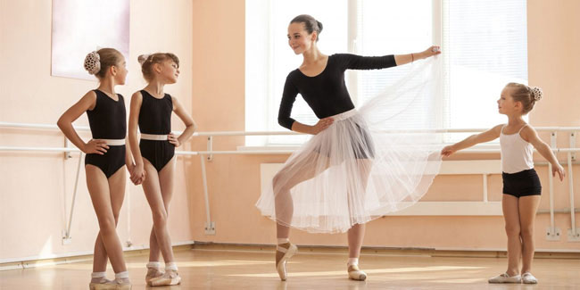
Наші переваги
Протягом 10 років танцювальний клуб "Флоріо" знайомить із мистецтвом танцю людей різного віку!
Команда професійних тренерів з досвідом викладання за кордоном
Сучасні танцювальні зали
Майстер-класи від провідних педагогів України і світу
Участь учнів у різноманітних заходах клубу, змаганнях та творчих фестивалях
Літні та зимові тренувальні табори
У вихідні дні - додаткові заняття з класики, стретчингу та акторської майстерності
Нагороди
Ми пишаємось своїми досягненнями і віримо, що попереду ще більше нагород!
Про нас
Танцювальний клуб "Флоріо" засновано в 2010 році. Це один з найуспішніших клубів спортивного танцю України. Високий рівень професіоналізму наші танцюристи підтверджують щорічно на Чемпіонатах та Кубках України, а також на Світових Чемпіонатах.
Запрошуємо Вас у світ танцю, грації та краси!
Ми навчимо танцювати всіх!
Наші тренери та викладачі – це висококваліфіковані педагоги, майстри міжнародного класу.
У нашій танцювальній школі всі групи поділяються на різні рівні – від початківців «з нуля» і до найвищого рівня майстерності. На заняттях танцюють як у парі так і по одинці. Тренування проходять в наших спеціалізованих танцювальних залах у зручний час.
Для бажаючих – участь у змаганнях в Україні та закордоном.
«Флоріо» – це танцювальний клуб для всіх, це клуб майбутніх чемпіонів!
10
Років досвіду
2
Бальні кімнати
15
Міжнародних нагород
Будь-хто може танцювати!
Ці танці виконували наші учні з класу для початківців.
Покажи нам, як ти відчуваєш музику
Ми вчимо не тільки правильно рухатися, але і звільняти всі свої почуття та емоції за допомогою танців.
Пориньте в неповторну атмосферу музики, торкніться її, відчуйте! Наші інструктори із задоволенням допоможуть вам у цьому. Наші двері відчинені як для досвідчених танцюристів, так і для початківців. Звільніть свою внутрішню енергію за допомогою нашої школи бальних та спортивних танців "Флоріо"!
Хочете спробувати танці?
Підпишіться на пробне заняття прямо зараз!
Ви побачите, що кожен може танцювати!
Розклад
У сезоні 2020 у нас є лише вечірні заняття.
Понеділок 18:30 - 20:00
Балет для початківців
Ніколи не пізно почати танцювати балет! Наші інструктори допоможуть вам опанувати найвищу форму сценічного мистецтва!
Вівторок 18:30 - 20:00
Сучасний для рівня 2
Це казковий танцювальний стиль, у якому взяли найкраще з джазу, йоги та єдиноборств. Висловіть свої почуття пластикою та рухами!
Середа 18:30 - 20:00
Танець хіп-хопу для початківців
Хіп-хоп - це улюблений стиль танцю багатьох людей у всьому світі! Відкрийте свою улюблену хіп-хоп музику з нового боку!
Четвер 18:30 - 20:00
Танго для пар
Це найгарячіший, найпалкіший танець! Відчуйте всю пристрасть разом із партнером, який опановує яскраве аргентинське танго!
Стиль танцю
Кожен стиль танцю хороший по-своєму. Виберіть стиль, який вам найбільше подобається, або спробуйте кожен клас прийняти своє рішення.
Сучасний
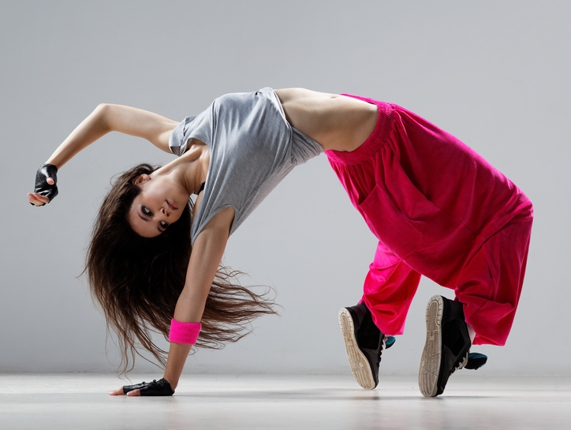
Хіп-хоп
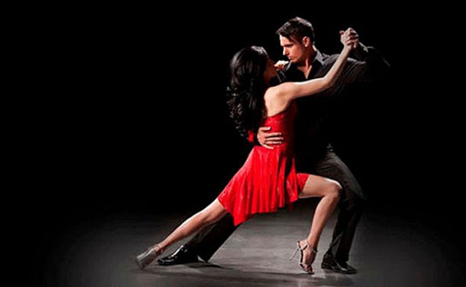
Танго
Ціноутворення
Реєстраційний внесок становить 30 доларів США за студента, щоб зарезервувати його для участі в класі.
Новачки
Будь-який стиль танцю
$150 щомісяця
Рівні 2-4
Сильні техніки
$220 щомісяця
Розширений
Для танцюристів із досвідом
$300 щомісяця
Змагальний танець
Тільки для дорослих груп
$380 щомісяця
Наша команда
Наш персонал складається з досвідчених викладачів, які вміють працювати з дорослими танцюристами будь-якого рівня в різних стилях і люблять викладати.
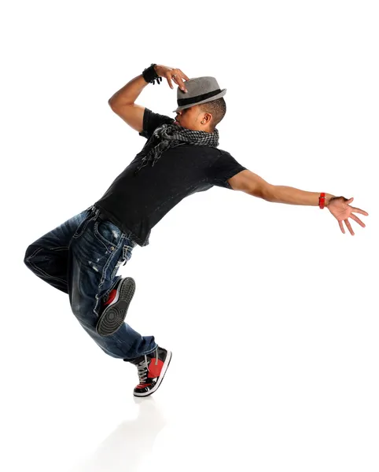
Макс Мисів
Інструктор хіп-хопу
Оксана Яремцьо
Інструктор сучасного танцю
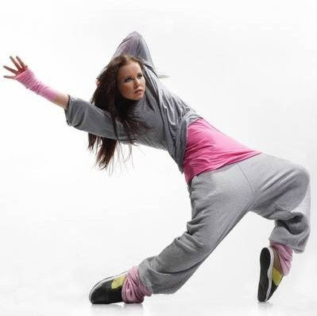
Аня Когут
Конкурсний інструктор танцю
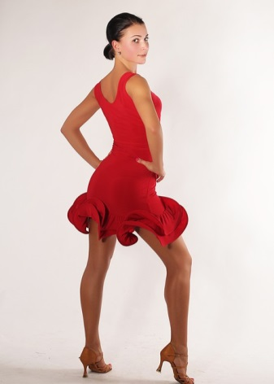
Анна Маланчак
Інструктор танго
Ірина Косендяк
Інструктор балету
Оксана Захарко
Інструктор хіп-хопу
Чому обирають нас
Щовечора ми відкриваємо двері нашої студії, щоб привнести у ваше життя трохи більше мистецтва.
Величезний досвід
Вчителі зі стажем понад 5 років діляться з вами своєю пристрастю до танців.
Будь-який рівень
Ми навчаємо початківців та допомагаємо покращити ваш рівень, якщо ви вже просунутий танцюрист!
Для дорослих
Середовище невимушене і створене для того, щоб усі почувались комфортно і ласкаво.
Не впевнені, який жанр вибрати?
Зв’яжіться з нами зараз і запишіться на безкоштовний пробний урок у кожному жанрі, щоб вирішити, який стиль вам найбільше підходить!
Галерея
Кожні півроку ми проводимо приватний концерт для студентів, їхніх друзів та родичів, а найкращі студенти можуть брати участь у наших публічних виставах.
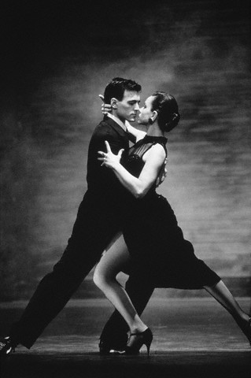
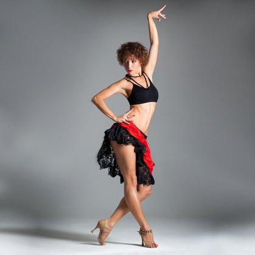
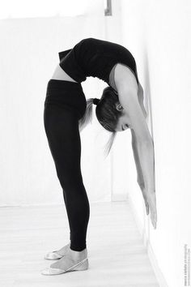
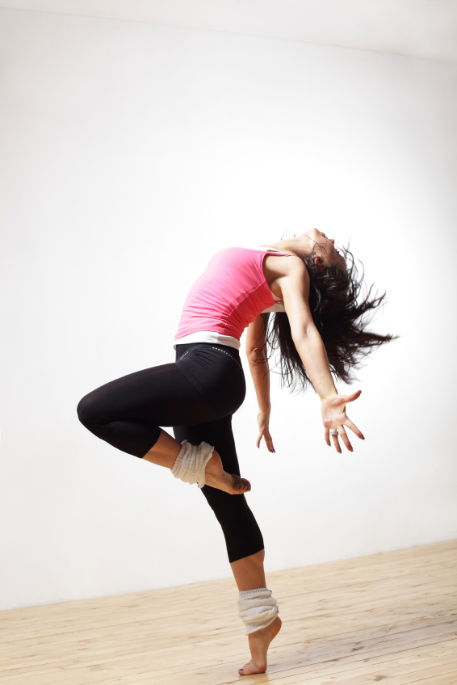
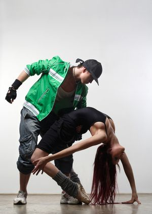
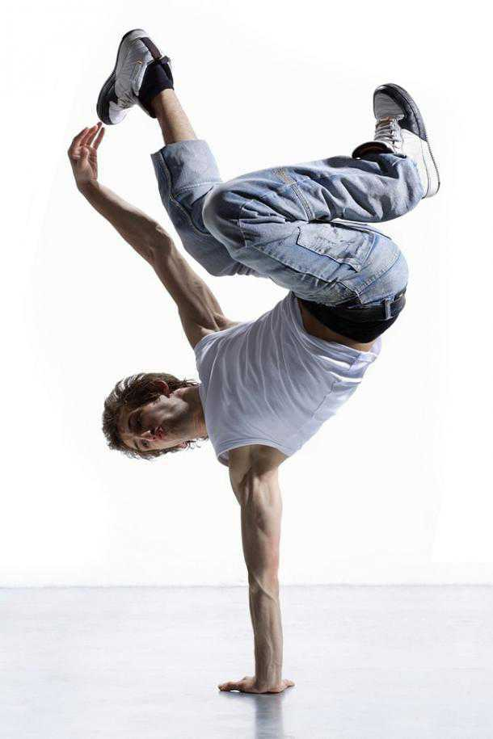
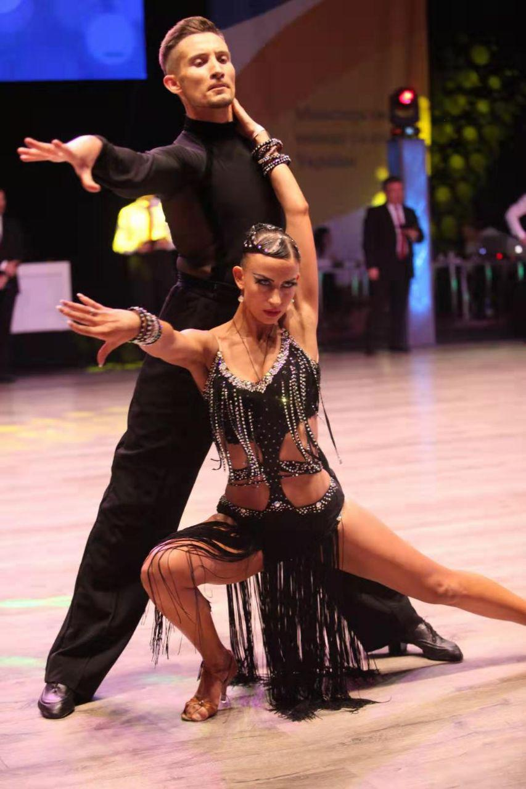
Відгуки
Відгуки наших студентів є найкращим доказом того, що в Just Dance Studio кожен знаходить те, що шукає.
Зоряна Іванців
Я завжди хотіла танцювати хіп-хоп, але мені було страшенно ніяково. Тим не менше, я вирішила спробувати і прийшла у студію "Флоріо". Велике спасибі Оксані за те, що вона не лише викладала, але й підтримувала мене в моїй любові до хіп-хопу.
12 жовтня 2019 р
Соломія та Андрій Гук
Ми любителі танго, і ми шукали нову танцювальну студію. Ми вибрали "Флоріо" і не пошкодували! Пристрасть та досвід вчителів вражають, і під їх керівництвом ми вивчаємо нові техніки!
04 грудня 2019 р
Юля Шатинська
Я ніколи раніше не чула про сучасний танцювальний стиль, але одного разу побачила дівчину, яка танцювала на вулиці, і мені це сподобалось. Я бачила, що "Флоріо" пропонувала такі заняття. Я була у захваті від першого уроку! Танцювальний стиль такий надихаючий!
18 квітня 2020 р
Партнери
Ми висловлюємо глибоку вдячність усім нашим партнерам, які допомагають в організації вистав, виставкових суконь та інших питань.
FAQ
Я хочу навчитися танцювати, але у мене немає досвіду. Ви мене навчите?